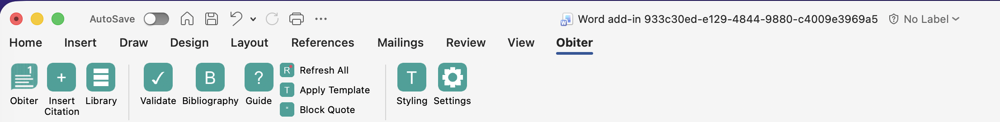
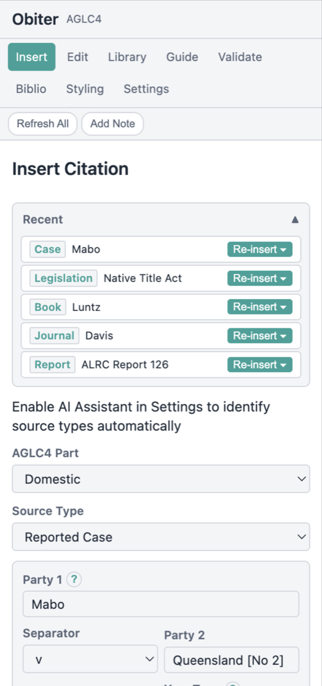
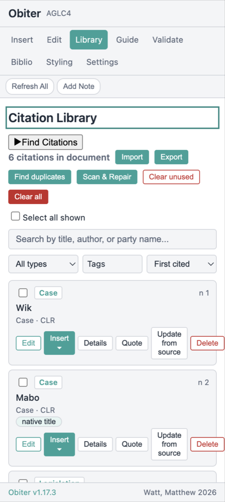
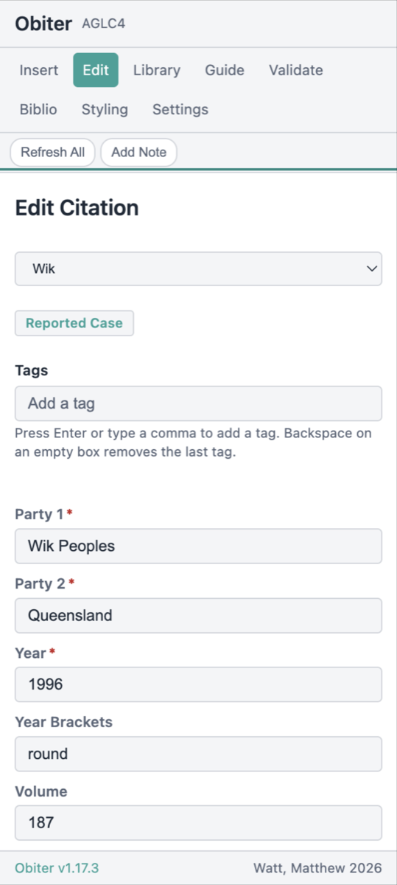
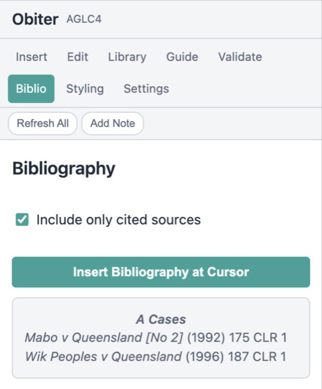
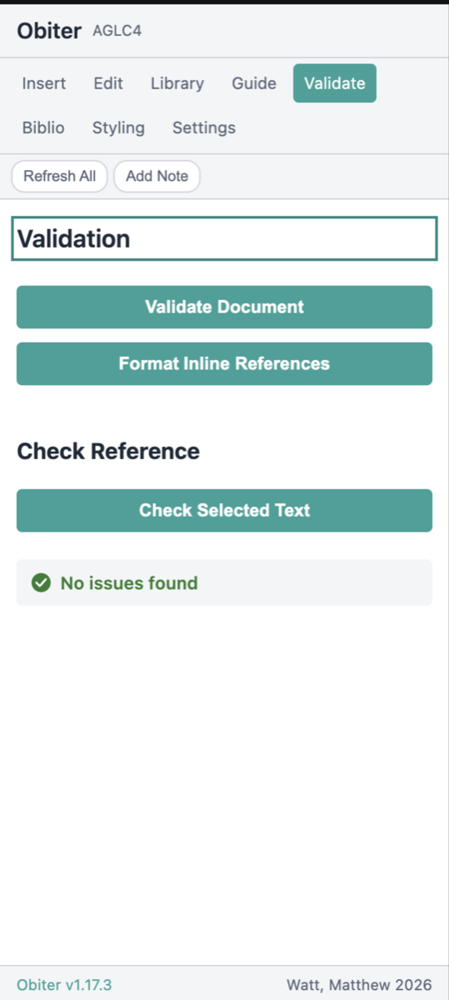

Documentation
A complete walkthrough of every Obiter feature. This guide explains how to use the add-in — not the citation rules themselves. For AGLC4 rules, see the What is AGLC4? page.
1. Getting Started
Installing from AppSource
The recommended way to install Obiter is through Microsoft AppSource. Open Word, go to Insert > Get Add-ins, and search for “Obiter”. Click Add and the add-in will be available in your ribbon immediately.
Sideloading for development
If you are testing a development build, you can sideload the add-in manually. Download the manifest file from GitHub and follow the sideloading instructions on the Download page for your platform (Windows, Mac, or Web).
The Obiter ribbon tab
Once installed, Obiter adds a dedicated tab to the Word ribbon. This tab contains button groups for inserting citations, managing your library, formatting your document, running validation, and accessing settings. Every feature is accessible from this ribbon tab.

ribbon-overview.png — The Obiter tab in the
Word ribbon showing all button groups.
2. Setting Up Your Document
Applying the AGLC4 template
Obiter can apply the correct AGLC4 document formatting in one step. Click Apply Template in the ribbon to set the correct font, margins, line spacing, and footnote formatting. This saves you from configuring each setting manually.
Heading levels
AGLC4 defines five heading levels with specific formatting. Obiter provides toolbar pills (labelled I through V) in the ribbon that apply the correct heading style to the current paragraph. Heading I is the highest level (centred, bold, uppercase), while Heading V is the lowest.
Select the text you want as a heading, then click the appropriate level button. The formatting is applied instantly.

document-setup.png — A document with the
AGLC4 template applied, showing heading levels and formatting.
3. Inserting Citations
Selecting a source type
Click Insert Citation in the ribbon to open the task pane. Start by selecting the type of source you are citing. Obiter supports over 80 source types across all 26 AGLC4 chapters, including cases, legislation, journal articles, books, treaties, and international materials.
Source types are organised by category. Use the search field or browse the list to find the one you need. If you are unsure which type to choose, the Help Me Choose button (available when AI is enabled) can suggest the correct type based on a description of your source.
Filling in the citation form
Each source type has its own form with the fields required by AGLC4. For example, a reported case requires the case name, year, volume, report series, and starting page. Required fields are marked and the form will not submit until they are filled.
As an example workflow for a reported case:
- Select Reported Case from the source type list.
- Enter the case name (e.g. “Mabo v Queensland (No 2)”).
- Enter the year, volume, report series, and starting page.
- Add a pinpoint reference if citing a specific page or paragraph.
- Review the live preview at the bottom of the form.
- Click Insert to add the citation as a footnote.
The live preview
As you fill in the form, a live preview at the bottom shows exactly how the formatted citation will appear in your footnote. This includes all italics, punctuation, and abbreviations that AGLC4 requires. You can check the output before inserting.
Editing the preview directly
In some cases you may need to adjust the formatted output manually. The preview is editable — click into it and make changes directly. This is useful for unusual citations that do not fit neatly into the standard form fields.
Parse with AI
If you have AI enabled, you can paste a raw citation string and click Parse with AI. Obiter will extract the individual fields (case name, year, volume, etc.) and populate the form automatically. This is particularly useful for bulk entry.
Short titles
When inserting a citation, you can assign a short title. This short title is used in subsequent references and in the bibliography. If you leave it blank, Obiter will generate one automatically based on the source type’s conventions.

insert-citation.png — The Insert Citation
view with a reported case form filled in and the live preview showing.
4. Citation Library
Viewing all citations
The Citation Library shows every citation in your document. Open it from the ribbon by clicking Citation Library. Each entry displays the formatted citation, source type, and short title.
Search and filter
Use the search field at the top of the library to filter citations by any text in the citation — case names, authors, titles, or report series. You can also filter by source type category.
Inserting references
To insert a reference to an existing citation, click the citation in the library and use the insert dropdown. You can choose from:
- Auto — Obiter determines the correct format based on position (full, ibid, or short).
- Full — Forces a full citation regardless of position.
- Short — Inserts a short reference with a cross-reference note number.
- Ibid — Inserts an ibid reference, optionally with a pinpoint.
In most cases, Auto is the correct choice. Obiter will automatically select the right format based on the citation’s position in the document.
Import from Word Source Manager
If you have existing citations in Word’s built-in Source Manager, Obiter can import them. Click Import in the Citation Library and select Word Source Manager. Obiter reads the source data and creates properly formatted AGLC4 citations from it.
Import from BibTeX
You can also import citations from a BibTeX file. Click
Import and select BibTeX, then
choose your .bib file. Obiter parses the BibTeX entries
and maps them to the appropriate AGLC4 source types.

citation-library.png — The Citation Library
showing multiple citations with the insert dropdown open.
5. Subsequent References
How Obiter handles ibid
AGLC4 Rule 1.4.3 requires that ibid is used when a footnote cites the same single source as the immediately preceding footnote. Obiter detects this automatically. When you insert a citation that refers to the same source as the previous footnote, Obiter formats it as Ibid (with an optional pinpoint) instead of repeating the full citation.
If the preceding footnote cites multiple sources, ibid cannot be used. Obiter handles this correctly and falls back to a short reference instead.
Short references with cross-reference notes
When a source has been cited in full earlier in the document but ibid does not apply, Obiter inserts a short reference in the form “Short Title (n X) pinpoint”, where X is the footnote number of the first full citation. These cross-reference numbers are managed as fields and update automatically when footnotes are reordered.
The Refresh All button
If you have moved, deleted, or reordered footnotes, click Refresh All in the ribbon. Obiter rescans the entire document and recalculates every ibid, short reference, and cross-reference note number. This ensures all subsequent references remain correct after edits.

subsequent-refs.png — A document showing
footnotes with a full citation, ibid, and a short reference with (n 1).
6. Editing Citations
Clicking a citation to edit
Every citation Obiter inserts is wrapped in a content control. To edit a citation, click on it in the footnote. Obiter detects the click and opens the Edit Citation view in the task pane with the citation’s data loaded.
The Edit Citation view
The Edit Citation view shows the same form you used to insert the citation, pre-filled with the current values. Change any field, and the live preview updates to reflect your changes. Click Update to save the changes back to the document.
Format toggle
In the Edit Citation view, you can override the reference format. The format toggle lets you switch between Auto, Full, Short, and Ibid. Auto is the default and lets Obiter determine the correct format based on position. Overriding to Full forces a full citation even when Obiter would normally use ibid or a short reference.
Deleting citations
To delete a citation, open the Edit Citation view and click Delete. This removes the citation from the document and the library. After deleting, run Refresh All to update any subsequent references that may have been affected.

edit-citation.png — The Edit Citation view
with a citation loaded and the format toggle visible.
7. Bibliography
Generating a bibliography
Click Bibliography in the ribbon to open the bibliography view. Obiter collects all citations in your document and generates a formatted bibliography following AGLC4 conventions. A preview is shown in the task pane before you insert it.
AGLC4 sections
AGLC4 requires bibliographies to be divided into sections with specific headings:
- A — Articles, Books, Reports
- B — Cases
- C — Legislation
- D — Treaties
- E — Other
Obiter sorts each citation into the correct section automatically. Within each section, entries are ordered alphabetically by the first element of the citation.
Include only cited sources
By default, the bibliography includes every citation in your library. If you want to include only sources that are actually cited in the document (as opposed to sources you added but later removed references to), use the Include only cited sources toggle.
Inserting into the document
Once you are satisfied with the preview, click Insert Bibliography. Obiter inserts the formatted bibliography at the end of your document with correct section headings and formatting. If a bibliography already exists in the document, it is replaced with the updated version.

bibliography.png — The Bibliography view
showing a preview with AGLC4 section headings.
8. Validation
Running a document scan
Click Validate in the ribbon to scan your entire document against AGLC4 formatting rules. Obiter checks punctuation, dashes, abbreviations, dates, numbers, footnote structure, and citation completeness.
Understanding results
Scan results are displayed in the task pane, grouped by severity:
- Errors — Problems that must be fixed. These are clear AGLC4 violations, such as missing required fields or incorrect formatting.
- Warnings — Issues that likely need attention but may be intentional, such as unusually long pinpoint references.
- Info — Informational notes about formatting choices that are technically valid but worth reviewing.
Click on any result to navigate to the relevant location in the document.
Check Reference with AI
If AI is enabled, you can use Check Reference on individual citations. This sends the citation to an AI model to verify details like case names, years, and report series against known legal databases. Results appear as suggestions — always verify before accepting.
Format Inline References
The Format Inline References option scans for citation-like text in the body of your document (outside of footnotes) and offers to convert them to proper footnote citations. This is useful when working with drafts that use in-text references instead of footnotes.

validation.png — The Validation view showing
scan results with errors, warnings, and informational items.
9. Reference Guide
Searching rules
The Reference Guide provides a searchable index of AGLC4 rules, accessible from the ribbon. Type a keyword or rule number into the search field to find relevant rules. Results display the rule number, a summary, and formatting guidance.
Abbreviations tab
The Abbreviations tab contains all standard abbreviations from AGLC4 Appendices A through C, including court abbreviations, report series abbreviations, and jurisdictional abbreviations. Use the search field to look up any abbreviation quickly.
Source types tab
The Source Types tab lists all supported source types with their required and optional fields. This is a useful quick reference when you are unsure which fields are needed for a particular type of source.

reference-guide.png — The Reference Guide
showing search results for a rule.
10. AI Assistant (Optional)
Obiter includes optional AI features that require you to provide your own API key. No data is sent to any AI provider without your explicit action. All AI features are clearly labelled in the interface and can be ignored entirely.
Setting up an API key
Go to Settings and find the AI Assistant section. Select a provider from the dropdown, enter your API key, and click Test Connection to verify it works. The key is stored locally in the document’s settings and is never sent to Obiter’s servers.
Supported providers
Obiter supports multiple AI providers. The specific providers available are listed in the Settings dropdown. Each provider may have different capabilities and pricing.
AI features
- Parse with AI — Paste a raw citation string and have the AI extract individual fields to populate the form.
- Help Me Choose — Describe your source and the AI suggests the correct source type.
- AI Suggest Short Title — Automatically generates an appropriate short title based on the citation data.
- Check Reference — Verifies citation details against known legal databases.

ai-assistant.png — The AI Assistant settings
with the provider dropdown and Test Connection button.
11. Settings
Citation standard selector
At the top of Settings, you can select the citation standard for the current document. The default is AGLC4. When multi-standard support is available, you will also be able to select OSCOLA 5 or NZLSG 3 from this dropdown.
Citation management
The Citation Management section controls how Obiter handles subsequent references. The Auto-refresh option, when enabled, automatically recalculates ibid and short references every time you insert or modify a citation. When disabled, you must click Refresh All manually.
Document formatting
The Document Formatting section controls how Obiter formats document elements such as margins, font, line spacing, and footnote formatting. These settings align with AGLC4 requirements by default, but you can adjust them if your institution has specific requirements that differ.
Template customisation
The Template section lets you customise the document template that Obiter applies. You can adjust heading styles, paragraph formatting, and other document-level settings. Changes here affect only the current document.

settings.png — The Settings view showing
the citation standard selector and document formatting options.
12. Multi-Standard Support
Obiter is designed to support multiple citation standards. The engine is standard-agnostic — citation rules are loaded based on the selected standard, and the same workflow applies regardless of which standard you use.
Switching between standards
To change the citation standard for a document, open Settings and use the Citation Standard dropdown. Changing the standard re-formats all existing citations in the document to match the new standard’s rules.
Supported standards
- AGLC4 — Australian Guide to Legal Citation, 4th Edition. Fully supported.
- OSCOLA 5 — Oxford University Standard for Citation of Legal Authorities, 5th Edition. In development.
- NZLSG 3 — New Zealand Law Style Guide, 3rd Edition. In development.
How formatting changes per standard
Each standard has its own rules for citation order, punctuation, abbreviations, and bibliography structure. When you switch standards, Obiter applies the new standard’s rules throughout the document. Source type forms may show different fields depending on what the selected standard requires.

multi-standard.png — The standard selector
showing AGLC, OSCOLA, and NZLSG options.
13. Keyboard Shortcuts & Tips
Keyboard shortcuts
Obiter registers keyboard shortcuts for common formatting actions. These work on both Windows and Mac.
| Windows | Mac | Action |
|---|---|---|
| Ctrl+Shift+1 | Cmd+Shift+1 | Heading Level I |
| Ctrl+Shift+2 | Cmd+Shift+2 | Heading Level II |
| Ctrl+Shift+3 | Cmd+Shift+3 | Heading Level III |
| Ctrl+Shift+Q | Cmd+Shift+Q | Block Quote |
| Ctrl+Shift+R | Cmd+Shift+R | Refresh All |
Quick heading application
Use the heading level buttons (I–V) in the Obiter ribbon tab to quickly apply AGLC4 heading styles. Place your cursor in the paragraph you want to format as a heading and click the appropriate level. There is no need to select the entire paragraph first.
Block Quote
AGLC4 requires that quotations of 50 words or more be formatted as block quotes (indented, no quotation marks). Select the text and click Block Quote in the ribbon to apply the correct formatting.
Refresh All
After making significant edits to your document — reordering sections, deleting footnotes, or pasting content from another document — click Refresh All in the ribbon. This recalculates every subsequent reference in the document and ensures all cross-reference numbers are correct.
General tips
- Insert citations as you write rather than adding them all at the end. This gives Obiter the best context for determining ibid and short references.
- Use Auto format mode unless you have a specific reason to override. Obiter follows AGLC4 rules for determining reference format.
- Run Validate before submitting your document. It catches formatting issues that are easy to miss during writing.
- Assign meaningful short titles when inserting citations. They appear in subsequent references and make your footnotes easier to read.
- Use the Citation Library search to quickly find and re-insert sources you have already cited.